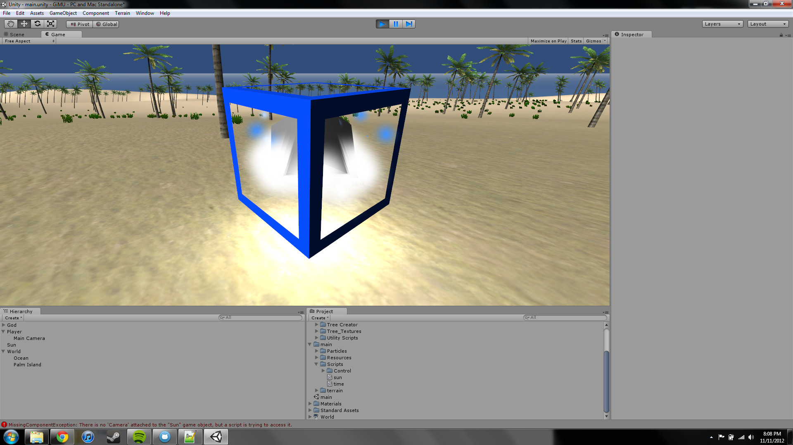

Brozing-what?
November 11, 2012
I decided to change the development name from Monohedron to Brozingaron. Why you ask? Because we wanted to be hipsters on Google. And no, Brozingaron is not a word in any language. I simply asked somebody to press random buttons on their keyboard in a way that resembeled pronouncable words. This wasn't one of them, but it was really close.
You know what that means. Logos!
So the build cycle....
Things are happening. Slowly. Very slowly. Like dead turtule in a pit of tar slowly. But things are happening. I'm currently working on a day/night cycle and a God character.
I'm not good at 3D modeling, so I decided to take some creative liberty here.

Also pictured, the lack of clouds
It's a bit hard to tell from the picture, but there's a smaller black cube inside of the particle emitters. It rotates.
There are a couple of things to wrap up in this build (as in the entire sky) but a new build should be ready eventually. And whenever that happens is when I'll post the first Macntosh build.
Sorry for the vague date, but I don't like deadlines as you can probably tell and I don't want to get peoples' hopes up.{kind=link}
{kind=link}